cloud company network
Project description:
In this project, I will create a realistic cloud company network with separate network segments for internal, DMZ, and management purposes, basic security configurations, and essential services hosted on servers. Since there are no other
projects like this, or at least I couldn't find any to compare mine to, I don't know how accurate it will be, but I will try my best.
Step 1: I started Cisco Packet Tracer and created a new project.
Step 2: I will add Network Devices
1. I will add two routers (e.g., 2911) to the workspace. One will act as the edge router, and the other as the internal router.
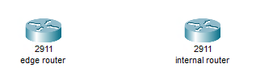
2. I added three switches (e.g., 2960) to the workspace: one for the internal network, one for the DMZ (Demilitarized Zone), and one for the management network.
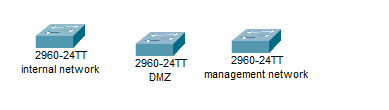
3. Three servers for web, email, and FTP services.
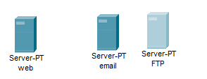
4. For end devices, I dragged and dropped several PCs onto the workspace to simulate employee workstations.
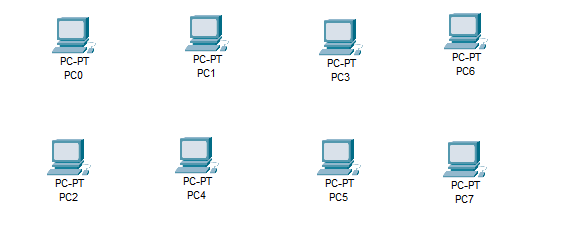
5. Lastly, I added a Cloud onto the workspace.
Now I will connect the devices.
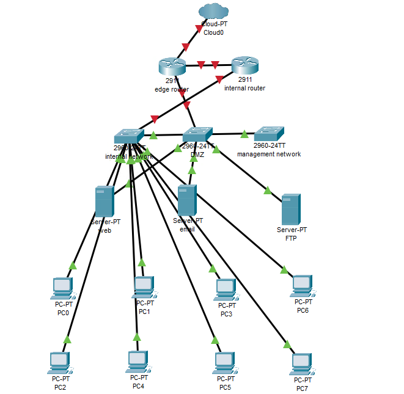
1. Edge Router Gig0/0 to the Cloud ethernet6.
2. Edge Router Gig0/1 to the DMZ Switch Gig0/1.
3. Internal Router Gig0/1 to the Internal network Gig0/1.
For the connections below, I used available Fast Ethernet cables:
4. Internal network to the Management network.
5. Servers to the DMZ Switch.
6. PCs to the Internal Switch.
And Edge Router Gig0/2 to the Internal Router Gig0/2.
I have turned the port status on for the routers.
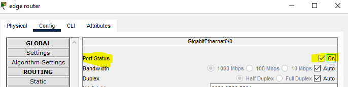
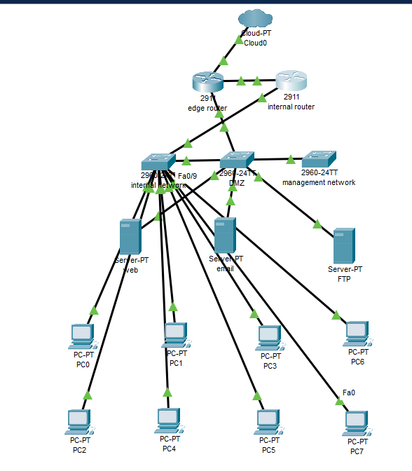
I will configure IP addressing.
Edge Router:
I opened the CLI tab.
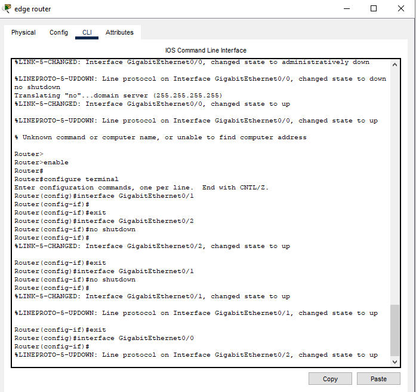
I am going to enter configuration mode.
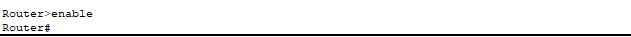
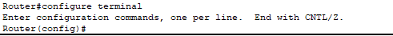
And assign IP addresses to interfaces:
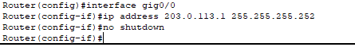
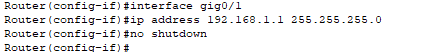
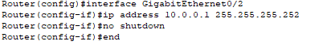
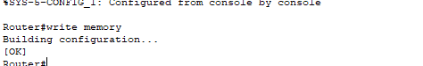
Internal Router:
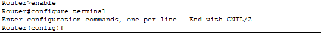
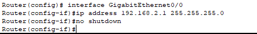
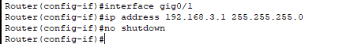
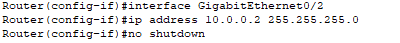
I edited the edge router.
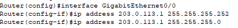
Servers (DMZ):
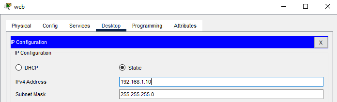
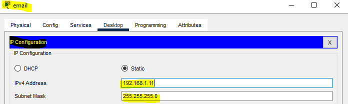
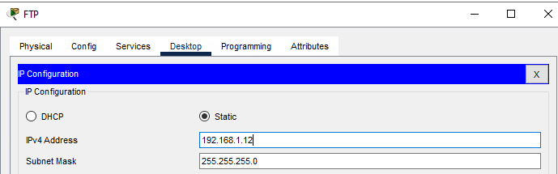
I tested the connections by having the servers ping each other.
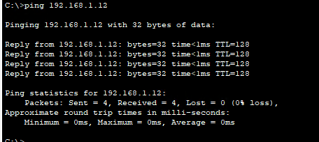
PCs (Internal Network):
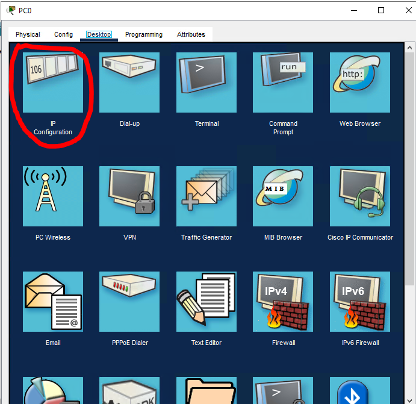
I did the same with the PCs as I did with the servers; the only difference is I connected them to the internal router.
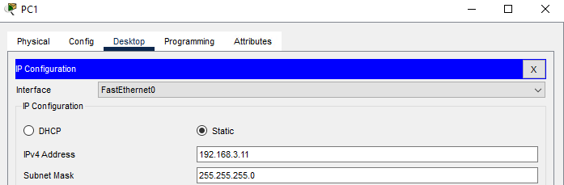
I tested the connection the same way.
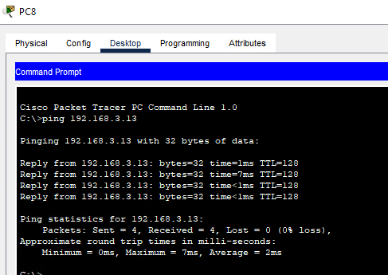
Management Network:
I made PC0 the management PC and assigned it a static IP address (e.g., 192.168.3.10).
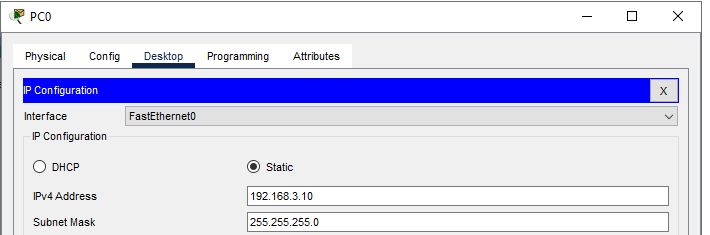
I will configure the routers.
1. Once again, I will start with the Edge Router.
I will start by configuring NAT:
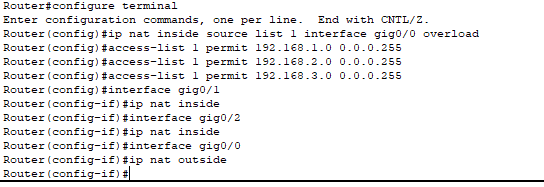
Now let's configure a default route:
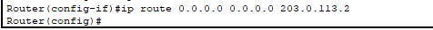
2. Internal Router
I will configure static routes.
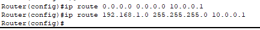
Configure Switches.
1. Create VLANs
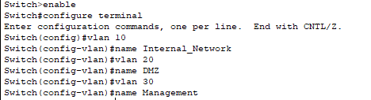
Assign ports to VLANs
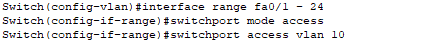
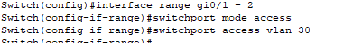
I assigned VLAN 20 (DMZ) to the interface range fa0/25 - 48.
Configure Services on Servers
1. Web Server:
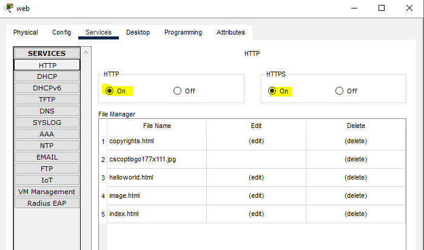
2.Email Server:
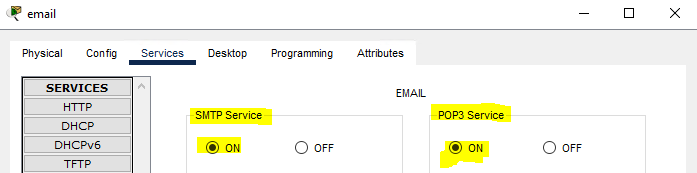
3. FTP Server:
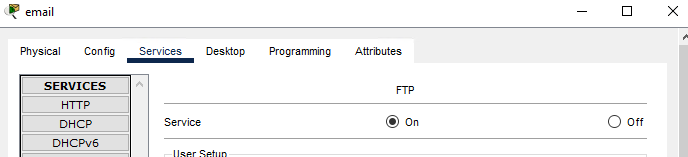
I enable FTP services and set up credentials.
Configure Security Settings
I will configure Access Control Lists (ACLs) on the Edge Router.
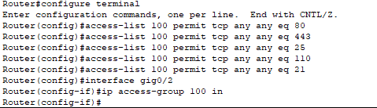
Save and Document
Edge Router (R1):
Gig0/0 (To Cloud): 203.0.113.1/30
Gig0/1 (To DMZ Switch): 192.168.1.1/24
Gig0/2 (To Internal Router): 10.0.0.1/30
Internal Router (R2):
Gig0/2 (To Edge Router): 10.0.0.2/30
Gig0/0 (To Internal Switch):
Before I save it, I will structure it better.

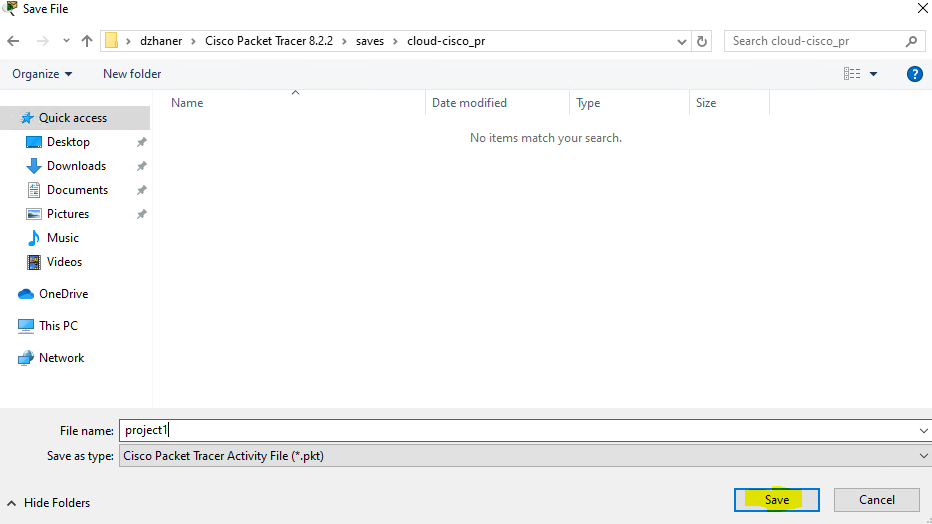
I don't have other projects because this was hosted on a virtual machine that I used only for this project, but I will transfer it to my PC. Thanks for checking it out. If you have feedback, please contact me on LinkedIn.